SolBeta (under production)
I fell in love with the sport of rock climbing during my time in Japan, an internationally known bouldering powerhouse. After being introduced to the sport,
I quickly recognized it as an incredibly analytical, cooperative, and methodical sport. In fact, it is almost expected of climbers to share "beta"
(personal solutions to climbing routes) with each other.
However, after returning to America and becoming distant to the climbers that I had grown close to in Japan, I had the idea of developing an application that would
allow us to continue to help each other solve complicated bouldering problems without being physically next to each other: a collaborative climbing platform.
Working with fellow engineer Brandon Powers (recent newgrad and ViaSat employee), I've developed an incomplete front-end for the the idea.
More progress needs to be made to the UI and a lot needs to go into making this a simple, usable, and enjoyable tool for any climber.
As a fan of modular development, and with the goal of creating a maintainable and fast UI,
I've decided to use React and Redux to handle the front-end of the application.
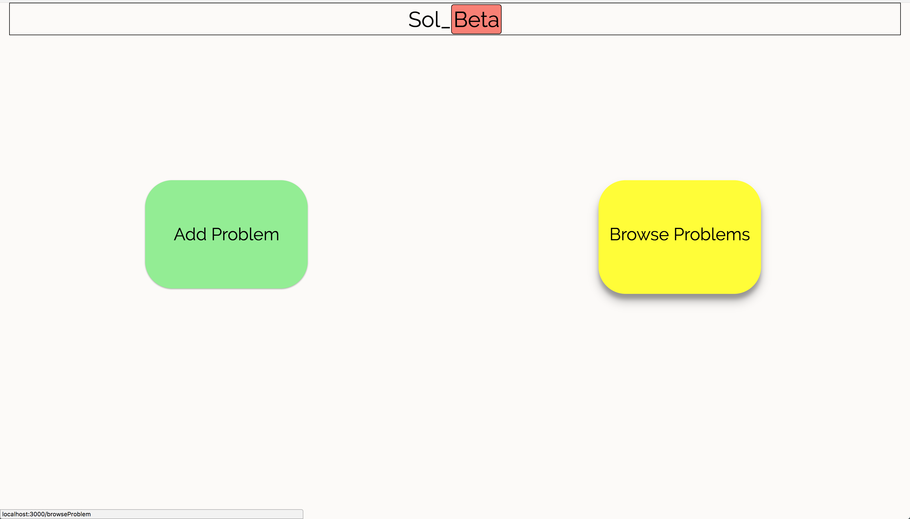
Above is an image of the first screen that you would see if you were to use the app. We have two options: add a problem, and browse a problem.
Let's start with Browse!
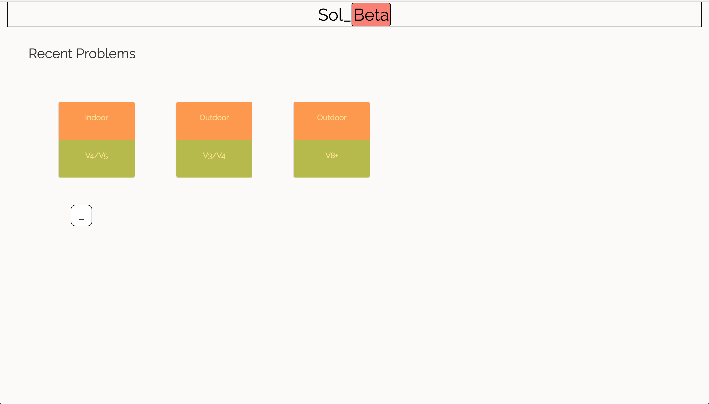
After you go to the browse page, you will see a screen that shows you a list of problems that you can either solve, or view proposed solutions for.
Let's continue by clicking on the Indoor problem labeled with a v4/v5 difficulty grade.
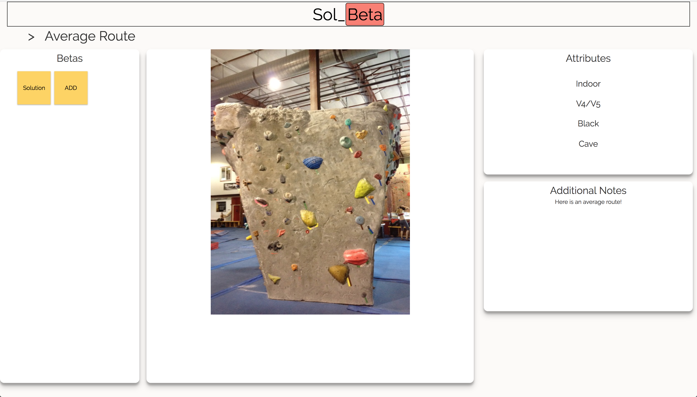
Here we can see the meat of the app. We have a screen here where we can view a problem, it's attributes, notes about it, and a list of proposed betas.
We also have some UI issues here, but I'll leave that out for now since the project is still being developed and this is a just a demo.
If we click on the "add" button in the Betas box, we will move to the page where we can add a solution for this particular problem, called "Average Route."
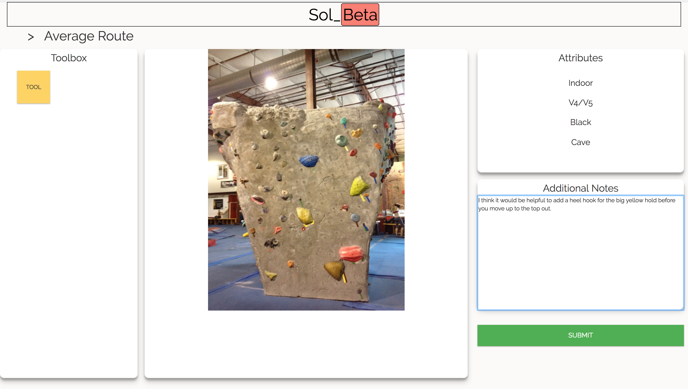
Here, the betas box has become a toolbox and the additional notes sections is able to be filled in by us, the problem solver. In the final product,
we would be able to drag and drop pre-made or custom moves from the toolbox, over the image of the problem. We would also be able to add any notes
we want to offer minute details to anyone who might be interested in trying our proposed beta. Let's submit this beta and move on by clicking the green submit button.
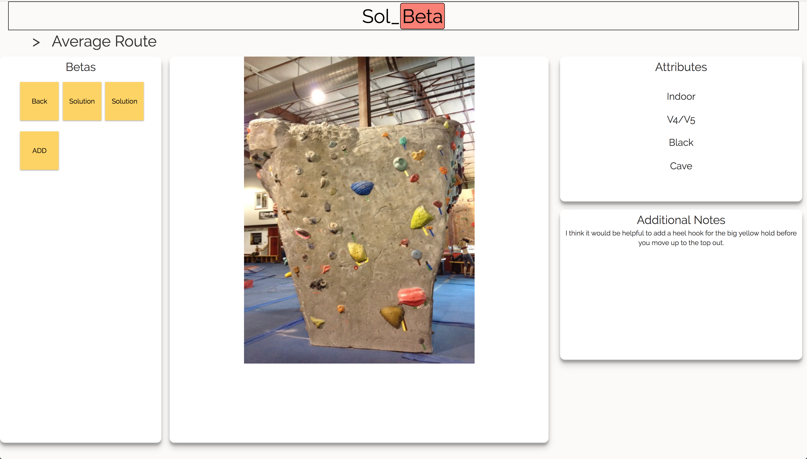
We are greeted with a similar page as before but now the betas box has our solution and the additional notes has our note. We can switch between and
proposed solution by clicking on the button in the betas box at any time.
______________________________________
So there you have it! A very incomplete, non-functional, mini-proof-of-concept for a project that I've become quite interested in completing.
In future updates, I will add a backend to handle database queries to what will be a growing list of probles and solutions. In addition, I will
revamp the UI in order to provide a smoother, more intuitive User Experience. Finally, I will distribute this alpha build to my climbing
friends and get input back from them!
You can keep up with the project, or even contribute by visiting my github page located at the top right corner of this website!
Tohoku University System Robotics Laboratory
Located in Sendai, Tohoku University is one of the oldest universities in Japan. Through the UC system, I participated in the JYPE (Junior Year Program in English) where I performed intensive research under the guidance of Professor Kazuhiro Kosuge of the System Robotics Laboratory in Aobayama Campus. During my time in this program I not only studied robotics, but also learned more about myself, my heritage, international culture, Japanese culture, and written and spoken Japanese.
SAKES (Spring Assisted Knee Exoskeleton System)
The Spring Assisted Knee Exoskeleton Project is the idea of Tohoku University Master's student Vincent Babin. The motivation behind the project is to explore ways to make simple leg exoskeletons smarter and better geared towards rehabilition and physical assistance. The mechanical concept builds upon a spring assisted design that allows the device to switch between active and inactive spring assistance. It achieves this by using 3 main mechanical parts in cooperation with an on-board computer, motor, and two angle encoders. By allowing the spring to control it's angle relative to the lower leg, we can adjust the amount of assistance that the spring delivers to the wearer. In addition, by including an on-board computer, we can develop user profiles that the spring can intelligently learn from so that such factors as the user's natural walking gait and leg strength can be taken into account later in development.
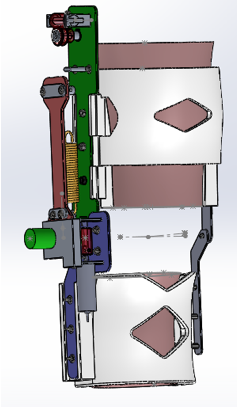Using a PC104 computer board in coordination with a T104-C160 counter board, we can keep track of the angle of the knee using a knee encoder. Using this information, we use C++ code in a QNX Real-Time Operating System environment to control the motor that adjusts the spring's relative angle to the lower leg. Further development regarding what might be the best way to model stepping motions are underway and will be applied to the exoskelton in future prototypes.
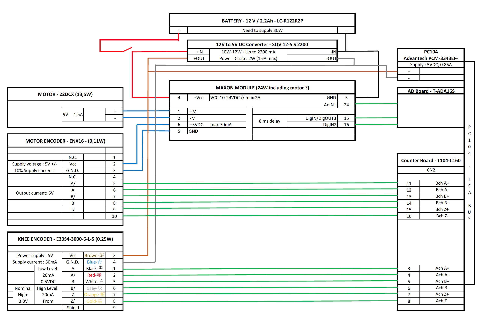Below is a photo of an early prototype design.
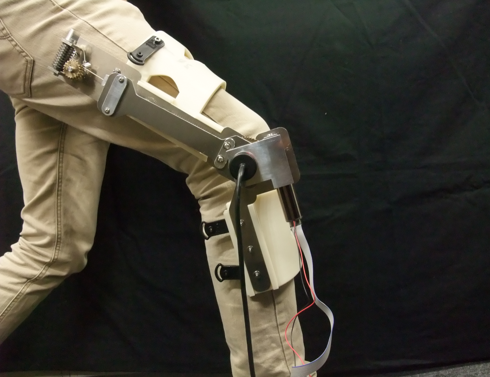BusyBlocks
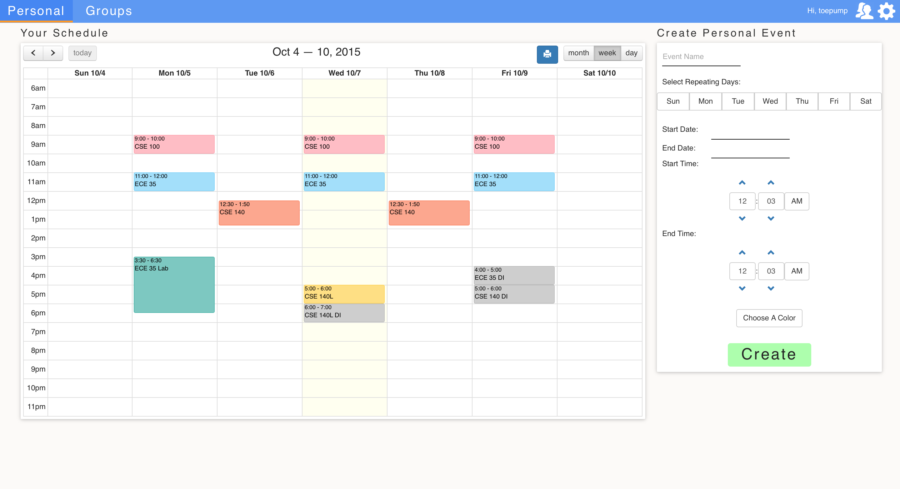
BusyBlocks is a software project developed by several students at the University of California, San Diego.
The web app creates a simple and intuitive way to find meeting times for groups with confusing and conflicting schedules.
BusyBlocks was written in AngularJS, HTML5 and CSS and used the Parse database management system as well as the Google Calendar API and Angular Bootstrap library.
I was the UI/UX Specialist in this project. This means that I was the main CSS code writer as well as the UI designer and UX leader but I also helped write HTML5
code and AngularJS code especially through our refactoring sessions. BusyBlocks was a top 4 finalist out of 17 software engineering projects.
The project website is
BusyBlocks
.
BusyBlocks includes a small social element that allows users to create their own groups consisting of other users. This lets them find free times for specific groups by overlaying and abstracting each members schedule.
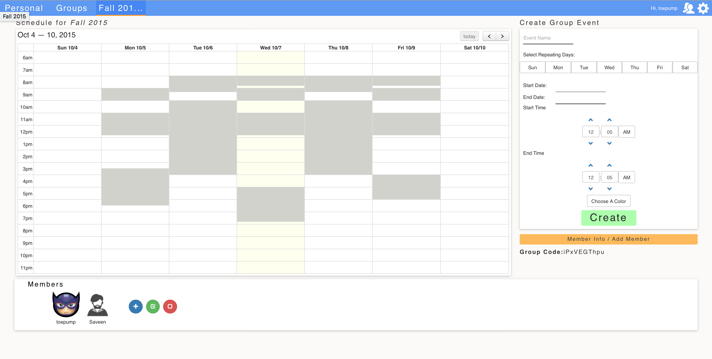After going into the group, you can see the schedules on top of each other and then also choose to see individual members' schedules to find free times for subgroups as well. Below is a video.
UCSD AUVSI
The University of California, San Diego AUVSI Team is a competitive team of engineers and RC pilots that design, build, and fly an autonomous airplane capable of self guided flight, takeoff, and landing as well as shooting photos and recognizing ground targets from altitudes of hundreds of feet. I am a member of the Embedded Systems team focusing on the autopiloting system, RC/Telemetry System, and (eventually) imagery controller. The autopilot module is the 3DR Pixhawk (ArduPilot Mega 2.6) for fixed wing aircraft and the autopilot software we are using is called MissionPlanner. We are using XPlane10 for the HIL Simulation. Originally using a Teensy 3.1, we've elected to instead use an Arduino as an Imagery Controller that communicates with our OBC (Onboard Computer) as well as our Gimbal Controller, camera, and radio. My responsibities include the calibration and assembly of the autopilot module with the flight sensors and RC/Telemetry hardware, the development of knowledge on hardware and software documentation, and the eventual documentation and utlization of code related to our imagery controller. The project website is here
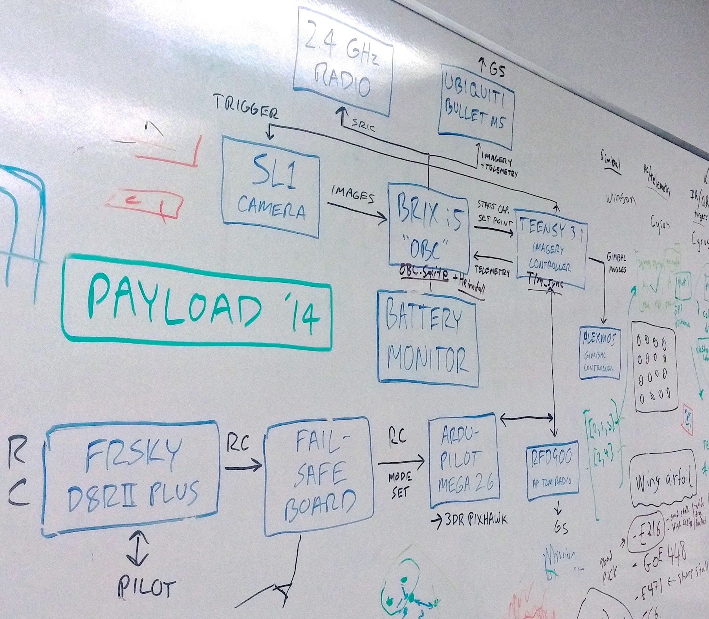Here is a diagram of our payload. I have been part of the team responsible for interfacing the Ardu-Pilot Mega 2.6 with the FRSKY D8RII Plus (Piloting Receiver) and the RFD 900 (Ground Station Receiver). I will soon be contributing to the work surrounding the Teensy 3.1 (which is planned to be switched out for an Arduino).
Raspberry Pi
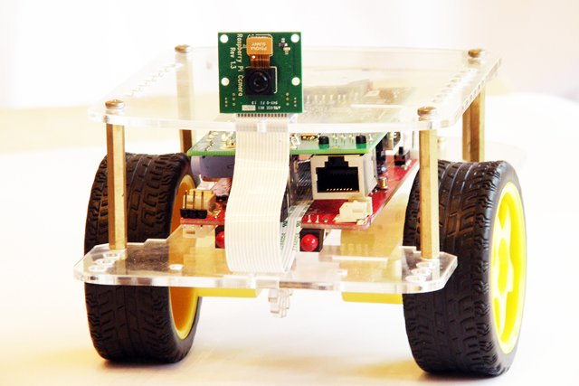Using the Raspberry Pi B+ microcomputer, I have and continue to work on small electronics and robotics projects.
For example, using the GoPiGo board (based on Arduino and interfaces through the RPi GPIO Pins) and robot
chassis, I've assembled the hardware and software components of a remotely operated rover. The rover is both highly customizable and
expandable. Using the GPIO pins on the RPi and the GoPiGo board (based on Arduino), you can control the motors for the wheels in either direction will soon be able to
control the servo packge for the camera, and more. The camera is a
Raspberry Pi "Pi Camera." Possible additions to the project include autonomy and computer vision elements. The Pi Rover has broken into pieces
as a result of poor traveling precautions...
Spudnik
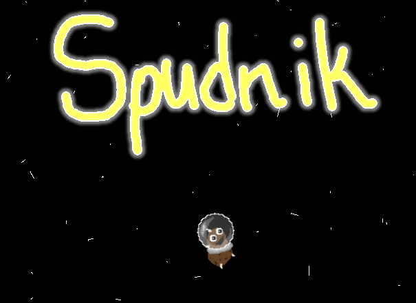Spudnik is a puzzle game featuring a potato in space. I introduced the puzzle mechanic and setting to two of my friends
and fellow engineers who together programmed what we have so far (Vladimir Klimkiv and Saveen Chadalawada). Aside from the mechanic and setting,
my other contributions have been in the department of
music composition and sound effect assets. The game is still far from complete and I hope to contribute both to level design and coding from here on out.
Spudnik is being developed
in the GameMaker Studio IDE and was started at a UCSD Game Jam (hackathon).
Play it here!
SpaceLearn
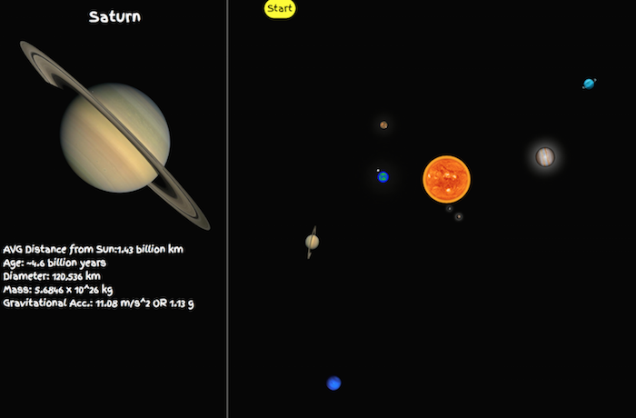In 4th grade I had my first real astronomy unit. Of course it was basic and only really emphasized our solar system, but it nonetheless sparked my interest in space exploration. Hoping to provide that same spark to young elementary schoolers, I set out to create a visually stimulating and interactive web application. Still in the works, SpaceLearn will include a fully animated diagram of our solar system. Furthermore, a small display on the side of the screen will provide quantitative data about each planet as well as interesting facts and current news regarding the planet of interest. SpaceLearn is written in HTML, CSS, and Javascript and may eventually require the use of SQL and PHP depending on how I will implement notes and progress. Space is awesome!
Evil Hangman
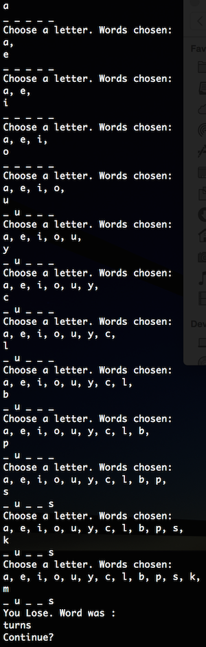Evil Hangman is a sadistic twist on the classic word game Hangman. In this command line style game, the computer actively utilizes the player's letter guesses to determine what word to choose. It does this in such a way that dramatically increases the likelihood of incorrectly guessing the word in question. Using the Dictionary datatype and a recursive algorithm that repeatedly splits the dictionary into parts that can be selected based on the user's input, Evil Hangman's AI opponent is nearly impossible to defeat. Above is a sample run!